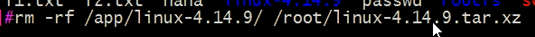

启动和排错¶
电源通过给主板给cpu供电，然后cpu读取主板上的只读存储器（rom）识别内存、显卡、硬盘等硬件
破坏centos7前446字节及修复命令
- 级别切换:
- init N ==> systemctl isolate name.target systemctl isolate multi-user.target
注:只有/lib/systemd/system/*.target文件中AllowIsolate=yes才能切换(修改文件需执行systemctl daemon-reload才能生效)
调整默认启动内核 vim /etc/default/grub GRUB_DEFAULT=0 （对应grub.cfg 文件第一个entry启动内核项）
grub2-mkconfig -o /boot/grub2/grub.cfg
删除编译安装的内核步骤：
